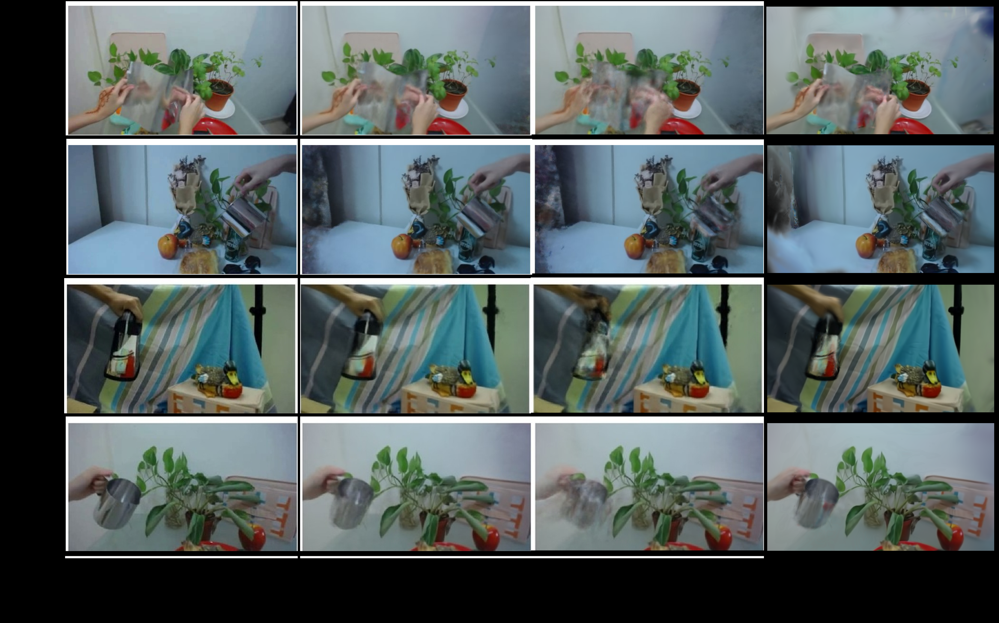
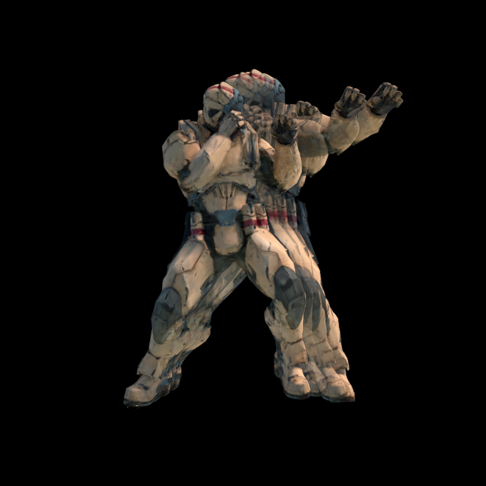
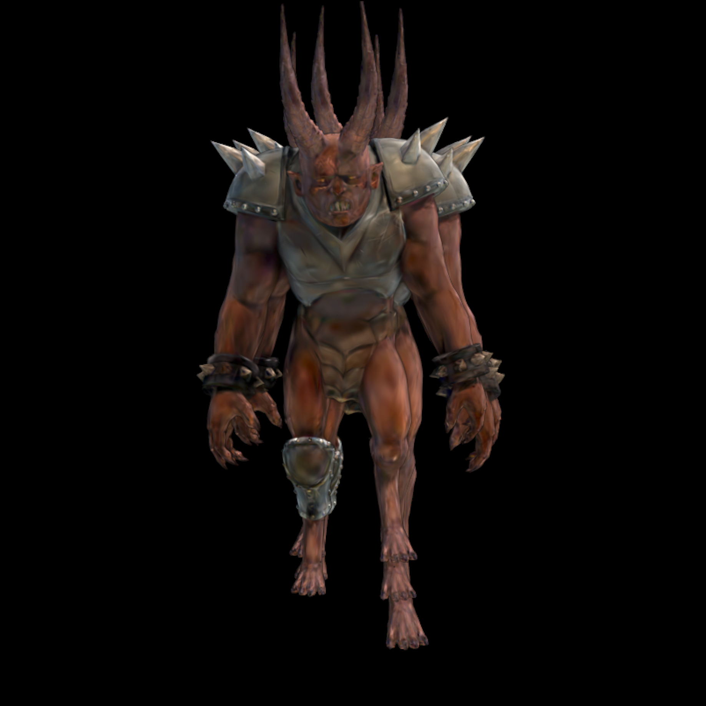
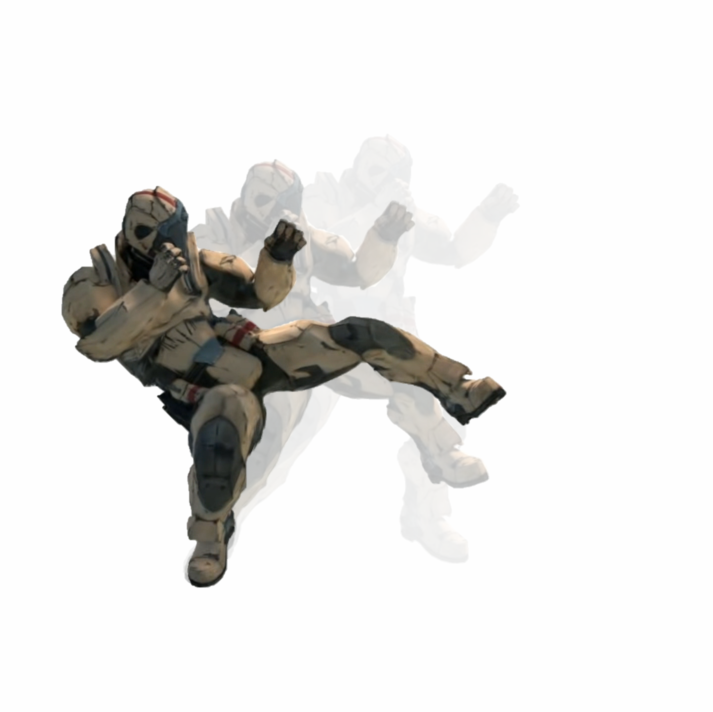
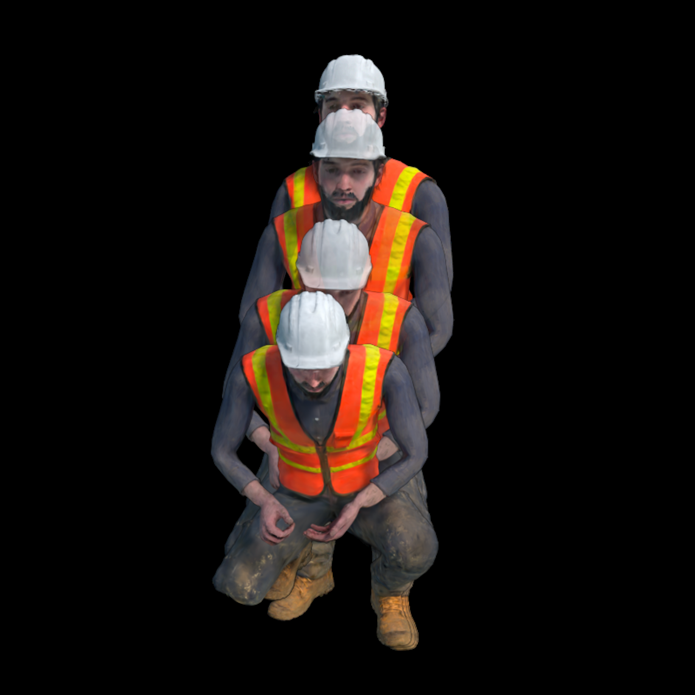

SC-GS: Sparse-Controlled Gaussian Splatting for Editable Dynamic Scenes
作者：Yi-Hua Huang, Yang-Tian Sun, Ziyi Yang, Xiaoyang Lyu, Yan-Pei Cao, Xiaojuan Qi
单位：香港大学（The University of Hong Kong）、VAST、浙江大学
项目主页：https://yihua7.github.io/SC-GS-web/
PDF 路径：PDF/234.pdf
摘要
这是一篇关于**动态场景 Novel View Synthesis（新视角合成）**的论文。换句话说，就是：给你一段单目视频（只有一个摄像头的视频），让 AI 学会从任意角度"重新拍摄"这个场景——不仅能渲染静态背景，还能正确呈现其中人物的动作。
这篇论文的核心贡献是：
- 用稀疏控制点（Sparse Control Points）来表示场景运动，控制点的数量（约 512 个）远少于场景中的高斯点（约 10 万个），因此运动表示非常紧凑。
- 引入变形 MLP（多层感知机），每个控制点预测随时间变化的 6DoF（六自由度）变换，大幅降低了学习复杂度。
- 自适应控制点策略 + ARAP 损失，让控制点分布自适应调整以适配不同区域的运动复杂度，同时保证运动的局部刚性。
- 支持用户控制的运动编辑，因为运动表示是显式且稀疏的，用户可以直接拖拽控制点来实现运动编辑，而不破坏外观质量。
实验结果表明，SC-GS 在 D-NeRF 和 NeRF-DS 两个基准数据集上，量化指标（PSNR、SSIM、LPIPS）全面超越已有方法，同时保持实时渲染速度。

第一节：背景知识——你需要先理解这些概念
如果你对这些概念已经熟悉，可以跳过本节。
1.1 什么是 Novel View Synthesis（新视角合成）？
想象你用手机绕着一朵花拍了一段视频。新视角合成的目标是：让你能从任意角度"看"这朵花——哪怕拍摄时根本没有从这个角度拍过。
用更专业的语言说：给定一组已知相机姿态的图像，重建出场景的 3D 表示，然后可以从任意新的相机位置渲染出图像。
应用场景：
- VR/AR：在虚拟世界中自由走动查看物体
- 电影制作：从任意机位"拍摄"特效场景
- 视频会议：从任意角度渲染参会者头像
1.2 什么是 Dynamic Scene（动态场景）？
静态场景 = 场景里一切都不动（比如拍一栋建筑）。
动态场景 = 场景里有东西在动（比如拍一个人在走路）。
动态场景的新视角合成难得多，因为：
- 同一个像素在不同时间点对应场景里不同的 3D 点
- 需要同时重建场景的"形状"和"运动"
1.3 什么是 Gaussian Splatting（高斯泼溅）？
这是 2023 年提出的一种革命性场景表示方法，核心思想是：
把场景表示成一堆带颜色、带透明度、带旋转缩放的 3D 高斯椭球，然后通过一种叫做"泼溅（Splatting）"的方式把它们投影到 2D 图像平面上，从而实现极快渲染（实时！）。
对比 NeRF（神经辐射场）： | 特性 | NeRF | Gaussian Splatting | |------|------|----------------------| | 表示方式 | 神经网络（隐式） | 3D 高斯点云（显式） | | 渲染速度 | 慢（需沿射线采样数百个点） | 极快（实时） | | 训练速度 | 慢 | 快 | | 动态扩展 | 已有一些工作 | SC-GS 是代表作品之一 |
1.4 什么是 6 DoF（六自由度）？
描述一个刚体在 3D 空间中的完整运动状态需要 6 个参数：
$$ T = \begin{bmatrix} R & t \ 0 & 1 \end{bmatrix} \in SE(3) $$
- 3 个平移自由度：沿 X、Y、Z 轴的移动
- 3 个旋转自由度：绕 X、Y、Z 轴的旋转（常用四元数 \(q \in \mathbb{R}^4\) 或旋转矩阵 \(R \in SO(3)\) 表示）
参考：详细推导与几何直觉（旋转矩阵 9 元素 → 6 DoF）见 mathematics_basic_for_ML《旋转矩阵与 6DoF》；四元数表示与运算见《四元数》。
第二节：本文方法——SC-GS 是如何工作的？
2.1 核心思想概述
SC-GS 的核心洞察是：真实世界的运动通常是稀疏的、空间连续的、局部刚性的。
比如一个人在走路：
- 头部和躯干的运动可以用很少几个"控制点"来描述
- 手臂的摆动是局部刚性的（手臂不会像面条一样扭曲）
- 不同区域的运动复杂度不同（腿部运动复杂，背景几乎不动）
基于这个洞察，SC-GS 把动态场景分解成两个组成部分：
动态场景 = 静态外观（3D 高斯点）+ 稀疏运动（控制点 + MLP）
推理流程（见图 2）：

（见图 2）：flowchart LR
A[输入：时间 t + 相机视角] --> B[MLP：预测每个控制点的 6DoF 变换]
B --> C[插值：为每个高斯点计算变换]
C --> D[变形：将高斯点从 canonical 空间变换到时间 t]
D --> E[渲染：Gaussian Splatting 得到图像]
E --> F[输出：时间 t、视角 θ 下的图像]
2.2 稀疏控制点（Sparse Control Points）
2.2.0 控制点从哪来？如何通过 2.4 的优化目标优化？
来自论文原文（Section 4.1 & 4.3），不猜测：
① 控制点是可学习参数（Section 4.1）
在 canonical 空间中定义： $$ P = {(p_i, o_i) \mid i \in {1, 2, \dots, N_p}} $$
- (p_i \in \mathbb{R}^3)：控制点坐标（可学习）
- (o_i \in \mathbb{R}^+)：RBF 半径参数（可学习）
- 初始化方式：论文未明确说明（代码实现通常为随机初始化或从高斯点采样）
② 训练流程分两阶段（Section 4.3）
阶段一（预训练）：固定高斯点 G，只优化 P（控制点）和 MLP ψ
阶段二（联合训练）：P、ψ、G 全部联合优化
③ 损失函数如何驱动控制点更新（Section 4.1 & 4.3）
总损失：(\mathcal{L} = \mathcal{L}{\text{render}} + \lambda{\text{arap}} \mathcal{L}_{\text{arap}})
梯度反向传播路径：
渲染图像 → L_render → 变形后高斯点 μ_j^t, q_j^t → LBS 插值权重 w_jk → 控制点 6DoF 变换 (R_k^t, T_k^t) → MLP ψ 的梯度 → 控制点坐标 p_i、半径 o_i（直接被更新）
ARAP 损失也直接约束控制点：采样 8 个时间步得到每个控制点的运动轨迹 (p_i^{\text{traj}})，通过 ball query 找邻域，用 SVD 估计局部刚性旋转 (R_i^*)，然后惩罚偏离刚性变换的控制点位移（公式 10）。
④ 自适应调整（Section 4.3，训练过程中执行）
| 操作 | 判断条件 | 论文公式 |
|---|---|---|
| Prune（删除） | 控制点对高斯点的总影响力 (W_i = \sum_j w_{ji}) 接近零 | Section 4.3 文字描述 |
| Clone（克隆） | 邻域内高斯点的梯度范数加权和 (g_k) 大（重建误差大） | 公式 (11)、(12)：新点位置 = 相关高斯点位置的加权平均 |
总结：控制点不是"由 2.4 节产生"的——2.4 节描述的是损失函数（优化的目标）。控制点是模型参数，通过最小化该损失函数被反向传播更新，再加训练过程中的自适应修剪/克隆，最终得到优化后的控制点分布。
2.2.1 控制点是什么？
在 canonical 空间（可以理解为"参考帧"对应的空间）中，我们定义一组可学习的控制点：
$$ P = {(p_i, o_i) \mid i \in {1, 2, \dots, N_p}} $$
其中：
- \(p_i \in \mathbb{R}^3\)：控制点 \(i\) 在 canonical 空间中的坐标（可学习参数）
- \(o_i \in \mathbb{R}^+\)：控制点 \(i\) 的半径参数（用于 RBF 核函数，可学习）
- \(N_p\)：控制点总数（约 512，远小于高斯点数）
2.2.2 为什么用稀疏控制点？
| 方案 | 参数量 | 问题 |
|---|---|---|
| 每个高斯点直接预测运动 | ~10 万 × 6 = 60 万参数 | 容易过拟合、泛化能力差、推理慢 |
| 用一个 MLP 预测所有高斯点的运动 | MLP 参数量大 | 难以处理复杂运动、不同区域运动混淆 |
| 稀疏控制点 + 插值（本文） | ~512 × 6 + 小型 MLP | 紧凑、泛化能力强、支持编辑 |
2.2.3 控制点的 6DoF 变换是如何预测的？
对于每个控制点 \(p_i\)，用一个小型 MLP \(\psi\) 来预测它在时间 \(t\) 的 6DoF 变换：
$$ (R_i^t, T_i^t) = \psi(p_i, t) $$
其中：
- 输入：控制点 canonical 坐标 \(p_i\) + 时间 \(t\)
- 输出：旋转 \(R_i^t \in SO(3)\)（用四元数 \(r_i^t \in \mathbb{R}^4\) 表示以便优化）+ 平移 \(T_i^t \in \mathbb{R}^3\)
为什么要把 \(p_i\) 也作为输入？
这样 MLP 可以"知道"每个控制点在空间中的位置，从而学习到空间上连续的运动模式（比如"左边的控制点都往左移"）。
2.3 动态场景渲染（Dynamic Scene Rendering）
2.3.1 如何从控制点运动得到每个高斯点的运动？
用**线性混合蒙皮（Linear Blend Skinning, LBS）**技术：
对于每个高斯点 \(G_j\)（中心坐标为 \(\mu_j\)，四元数为 \(q_j\)），先通过 KNN 找到它最邻近的 \(K=4\) 个控制点 \({p_k \mid k \in N_j}\)。
插值权重用高斯 RBF 核计算：
$$ w _{jk} = \frac{\hat{w} _{jk}}{\sum _{k' \in N_j} \hat{w} _{jk'}}, \quad \hat{w} _{jk} = \exp\left(-\frac{d _{jk}^2}{2o_k^2}\right) $$
其中 \(d _{jk} = | \mu_j - p_k |_2\) 是高斯点 \(j\) 到控制点 \(k\) 的距离。
然后，高斯点在时间 \(t\) 的变换通过插值得到：
$$ \mu_j^t = \sum _{k \in N_j} w _{jk} \left[ R_k^t (\mu_j - p_k) + p_k + T_k^t \right] $$
$$ q_j^t = \big( \sum _{k \in N_j} w _{jk} \cdot r_k^t \big) \otimes q_j $$
公式解释：
第一个公式是：每个控制点对高斯点的变换贡献，按照权重 \(w _{jk}\) 加权求和。其中 \(R_k^t(\mu_j - p_k) + p_k\) 是把高斯点先相对于控制点做旋转、再平移回去，\(+ T_k^t\) 是加上控制点自身的平移。
第二个公式是：四元数用加权求和（再归一化）来插值旋转。
2.3.2 渲染
得到变形后的高斯点参数 \((\mu_j^t, q_j^t, s_j, \alpha_j, sh_j)\) 后，用标准 Gaussian Splatting 渲染流程得到时间 \(t\)、视角 \(\theta\) 下的图像。
2.4 优化目标（Optimization Objective）
总损失函数：
$$ \mathcal{L} = \mathcal{L} _{\text{render}} + \lambda _{\text{arap}} \mathcal{L} _{\text{arap}} $$
2.4.1 渲染损失 \(\mathcal{L} _{\text{render}}\)
$$ \mathcal{L} _{\text{render}} = (1 - \lambda _{\text{SSIM}})\mathcal{L}_1 + \lambda _{\text{SSIM}} \mathcal{L} _{\text{SSIM}} $$
对比渲染图像和 ground truth 图像，用 L1 损失 + D-SSIM 损失的加权和。
2.4.2 ARAP 损失 \(\mathcal{L} _{\text{arap}}\)
ARAP = As-Rigid-As-Possible（尽可能刚性），这是一个来自计算机图形学经典网格变形算法的正则化项。
直观解释：真实世界中，大多数物体的局部运动是刚性的（比如人的手臂变形时，小臂近似一个刚体）。ARAP 损失鼓励学习到的控制点运动满足"局部刚性"假设。
具体计算：
- 先为每个控制点 \(p_i\) 计算其运动轨迹：\(p_i ^{\text{traj}} = [p_i ^{t_1}, p_i ^{t_2}, \dots, p_i ^{t_N}]\)
- 通过 ball query 找到每个控制点的局部邻域 \(N _{ci}\)
- 用 SVD 分解估计局部刚性旋转 \(R_i^*\)：
$$ R_i^* = \arg\min_R \sum _{k \in N _{ci}} w _{ik} |(p_i ^{t_1} - p_k ^{t_1}) - R(p_i ^{t_2} - p_k ^{t_2})|^2 $$
- ARAP 损失 = 实际变换与刚性变换之差：
$$ \mathcal{L} _{\text{arap}}(p_i, t_1, t_2) = \sum _{k \in N _{ci}} w _{ik} |(p_i ^{t_1} - p_k ^{t_1}) - R_i^*(p_i ^{t_2} - p_k ^{t_2})|^2 $$
2.5 自适应控制点调整（Adaptive Control Points）
类似于 Gaussian Splatting 中的自适应密度调整，本文也对控制点做自适应调整：
- 修剪（Prune）：如果一个控制点对所有高斯点的"总影响力" \(W_i = \sum_j w _{ji}\) 接近零，说明它没用，删除。
- 克隆（Clone）：如果一个控制点附近的高斯点梯度很大（\(g_k\) 大，说明重建误差大），则克隆一个新控制点到该区域。
2.6 运动编辑

（Motion Editing）这是本文的一大亮点：因为运动是用稀疏控制点显式表示的，用户可以直接编辑运动！
步骤：
- 构建控制图：用控制点的运动轨迹来建立邻接关系（轨迹相似的控制点之间连边）
- 用户指定控制点：用户拖拽某些控制点到目标位置
- ARAP 变形：求解一个能量最小化问题，在用户约束下，让整个控制图做"尽可能刚性"的变形
- 重新渲染：用变形后的控制点驱动高斯点，得到编辑后的图像
flowchart TB
A[训练完成：得到控制点 P 和 MLP ψ] --> B[用户拖拽控制点 p_i 到目标位置]
B --> C[构建控制图 G = V,E]
C --> D[求解 ARAP 变形：最小化能量函数]
D --> E[得到变形后的控制点 P']
E --> F[用 P' 驱动高斯点]
F --> G[渲染得到编辑后的图像/视频]
第三节：实验结果与对比
3.1 数据集
- D-NeRF 数据集：8 个动态场景，360° 视角设置，合成数据
- NeRF-DS 数据集：7 个真实世界动态视频，包含复杂运动，相机位姿用 COLMAP 估计
3.2 评估指标
| 指标 | 全称 | 越高/越低越好 | 解释 |
|---|---|---|---|
| PSNR | Peak Signal-to-Noise Ratio | 越高越好 | 像素级精度 |
| SSIM | Structural Similarity | 越高越好 | 结构相似性 |
| MS-SSIM | Multi-Scale SSIM | 越高越好 | 多尺度结构相似性 |
| LPIPS | Learned Perceptual Image Patch Similarity | 越低越好 | 感知相似度（越接近 0 越好） |
3.3 主要实验结果
D-NeRF 数据集上的量化对比（表 1 摘要）
SC-GS 在几乎所有场景上取得 SOTA（最优） 成绩：
| 场景 | SC-GS (PSNR) | 最佳竞品 (PSNR) | SC-GS (LPIPS↓) |
|---|---|---|---|
| Hellwarrior | 42.93 | 39.07 (Baseline) | 0.0155 |
| Mutant | 45.19 | 41.45 (Baseline) | 0.0028 |
| Standup | 47.89 | 41.04 (Baseline) | 0.0023 |
| Hook | 39.87 | 34.47 (Baseline) | 0.0076 |
| Jumpingjacks | 41.13 | 35.74 (Baseline) | 0.0067 |
结论：SC-GS 相比直接在每个高斯点上做变形的 baseline 方法，PSNR 平均提升约 4-5 dB，LPIPS 降低约 60-70%。
NeRF-DS 数据集上的量化对比（表 2 摘要）
在真实世界数据上，SC-GS 同样取得最优平均性能：
| 方法 | 平均 PSNR | 平均 MS-SSIM | 平均 LPIPS (Alex) |
|---|---|---|---|
| HyperNeRF | 22.5 | 0.827 | 0.206 |
| NeRF-DS | 23.9 | 0.898 | 0.127 |
| TiNeuVox-B | 21.5 | 0.843 | 0.162 |
| Baseline | 23.7 | 0.891 | 0.151 |
| SC-GS (Ours) | 24.1 | 0.891 | 0.140 |
注意：NeRF-DS 数据集上相机位姿估计存在误差，影响了所有方法的性能。即便如此，SC-GS 仍取得最优平均结果。
3.4 消融实验

（Ablation Study）表 3 展示了去掉各个组件后的性能变化（在 D-NeRF 数据集上平均）：
| 配置 | PSNR | SSIM | LPIPS |
|---|---|---|---|
| 无控制点（w/o Control Points） | 38.51 | 0.9922 | 0.0162 |
| 无 ARAP 损失（w/o ARAP Loss） | 42.62 | 0.9963 | 0.0067 |
| 完整模型（Full） | 43.31 | 0.9976 | 0.0063 |
结论：
- 去掉控制点（直接用 MLP 预测每个高斯点的运动）：性能大幅下降，说明稀疏控制点是一种有效的运动正则化手段
- 去掉 ARAP 损失：性能略有下降，且会出现不自然的扭曲（见图 6）
3.5 视觉质量对比
下图展示了 SC-GS 与其他方法在 D-NeRF 数据集上的视觉对比（对应论文图 3）：

可以看出，SC-GS 生成的细节（如 Lego 人物的运动）比其他方法更清晰、更自然。
第四节：方法细节深入
4.1 MLP \(\psi\) 的网络结构
论文中并未详细描述 MLP 的层数，但根据相关工作的惯例：
- 输入维度：3（控制点坐标）+ 1（时间 t 编码）= 4+ 维
- 隐藏层：通常 2-4 层，每层 64-128 维
- 输出维度：7（4 个四元数 + 3 个平移参数）
时间 \(t\) 通常用**位置编码（Positional Encoding）**映射到高维空间：
$$ \gamma(t) = [\sin(2^0 \pi t), \cos(2^0 \pi t), \dots, \sin(2 ^{L-1} \pi t), \cos(2 ^{L-1} \pi t)] $$
4.2 与 4D-GS 的区别
4D-GS（同期工作）直接用 MLP 预测每个高斯点的变形偏移量，而 SC-GS 用稀疏控制点驱动。区别：
flowchart LR
subgraph "4D-GS"
A1[时间 t] --> B1[MLP]
B1 --> C1[每个高斯点的偏移量 Δμ_j, Δq_j]
end
subgraph "SC-GS（本文）"
A2[时间 t + 控制点坐标] --> B2[小型MLP ψ]
B2 --> C2[每个控制点的 6DoF 变换]
C2 --> D2[插值：高斯点变换]
end
SC-GS 的优势：
- 参数量更少（控制点远少于高斯点）
- 运动表示更紧凑，泛化能力更强
- 支持运动编辑（这是 4D-GS 做不到的）
4.3 控制点数量的选择
论文中 \(N_p \approx 512\)。这个数量是如何确定的？
- 太少：无法表示复杂运动（比如多个人同时做不同动作）
- 太多：失去"紧凑表示"的优势，且增加计算量
本文采用自适应策略：训练过程中自动增加/删除控制点，最终数量由场景运动复杂度决定。
第五节：局限性与未来工作
5.1 局限性
- 对相机位姿误差敏感：NeRF-DS 数据集上性能下降，说明方法对相机位姿估计误差较敏感。
- 高光材质处理不佳：论文承认，对于镜面反射等效果，当前方法不如专门设计的高光处理方法（如 Spec-Gaussian）。
- 动态模糊：输入视频中若有运动模糊，会影响重建质量。
5.2 未来工作
- 结合 Spec-Gaussian：处理高光表面
- 结合去模糊技术：处理动态模糊
- 扩展到多视图输入：当前主要针对单目视频，多视图可以进一步提升质量
第六节：总结
SC-GS 提出了一种基于稀疏控制点的动态场景表示方法，核心创新在于：
- 运动与外观解耦：用少量控制点表示运动，用大量高斯点表示外观
- 紧凑运动表示：控制点数量远少于高斯点，运动用 MLP 预测的 6DoF 变换表示
- 局部刚性正则化：ARAP 损失保证学习到的运动自然、物理合理
- 支持运动编辑：显式控制点表示使得用户可以直接编辑运动
在 D-NeRF 和 NeRF-DS 数据集上的实验表明，SC-GS 在渲染质量和速度上都达到了 SOTA 水平。
附录：关键公式汇总
| 公式 | 含义 |
|---|---|
| \(G(x) = e ^{-\frac{1}{2}(x-\mu)^T \Sigma ^{-1}(x-\mu)}\) | 3D 高斯分布函数 |
| \((R_i^t, T_i^t) = \psi(p_i, t)\) | MLP 预测控制点变换 |
| \(w _{jk} = \frac{\exp(-d _{jk}^2/2o_k^2)}{\sum \exp(...)}\) | 高斯 RBF 插值权重 |
| \(\mu_j^t = \sum_k w _{jk}[R_k^t(\mu_j - p_k) + p_k + T_k^t]\) | 高斯点中心变换 |
| \(\mathcal{L} = \mathcal{L} _{\text{render}} + \lambda _{\text{arap}}\mathcal{L} _{\text{arap}}\) | 总损失函数 |
参考文献
论文引用格式（部分关键文献）：
- [13] Kerbl et al., 3D Gaussian Splatting for Real-Time Radiance Field Rendering, ACM TOG 2023
- [37] Pumarola et al., D-NeRF: Neural Radiance Fields for Dynamic Scenes, CVPR 2021
- [41] Sorkine & Alexa, As-Rigid-As-Possible Surface Modeling, SGP 2007
- [50] Wu et al., 4D Gaussian Splatting for Real-Time Dynamic Scene Rendering, arXiv 2023